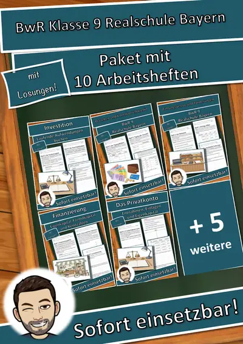
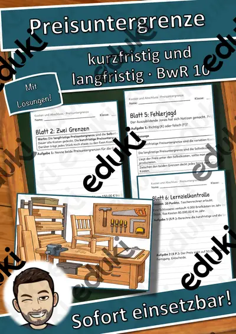
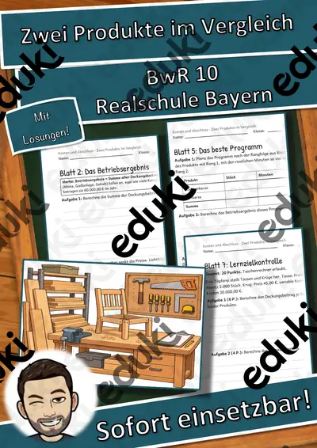
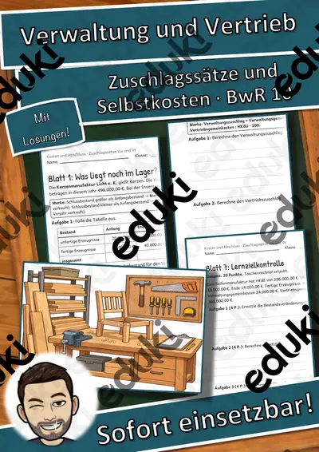

Materialpaket BwR Klasse 10 Realschule Bayern: 8 Arbeitshefte mit Lösungen
8 Arbeitshefte BwR Klasse 10 (Realschule Bayern) – im Paket zum halben PreisDu unterrichtest BwR an der Realschule und möchtest nicht jedes Arbeitsblatt selbst erstellen? Dieses Paket bündelt 8 Arbeitshefte für BwR Klasse 10. Alle Hefte sind aufeinander abgestimmt und enthalten Lösungen: Du sparst Vorbereitungszeit und hast durchgängig stimmige, fachlich geprüfte Aufgaben.
Preisvorteil und Zeitersparnis: Einzeln gekauft kosten die 8 Materialien regulär zusammen 23,92 €. Im Paket zahlst du nur 11,96 € und sparst damit rund 50 %. Dazu sparst du dir das Zusammensuchen und Abstimmen: Alles passt schon zusammen, ist sofort einsetzbar und liegt in einem Download bereit. Alle Materialien sind sorgfältig gearbeitet, vom Autor geprüft und enthalten Lösungen bzw. Musterlösungen, sodass du dir auch die Korrektur-Vorbereitung sparst.
Die 8 Materialien im Paket
Deckungsbeitrag: Die Lernenden wenden die Deckungsbeitragsrechnung auf typische Entscheidungen des Lampenwerks Zeller e.Zuschlagskalkulation: Angebote: Sie berechnen Gemeinkostenzuschlagssätze aus Jahreszahlen, kalkulieren Herstellkosten und Selbstkosten, setzen Gewinn, Skonto, Rabatt und Umsatzsteuer an und rechnen zur Kontrolle rückwärts.
Jahresabschluss – Arbeitsheft mit Lösungen (BwR 10, Realschule Bayern): K. beim Jahresabschluss: Sie entscheiden, wann eine Rückstellung zu bilden ist, buchen Bildung, Inanspruchnahme und Auflösung, grenzen Aufwand und Ertrag mit aktiven und passiven Rechnungsabgrenzungsposten periodengerecht ab und berechnen die Wirkung auf den Gewinn.
Kostenstellen: K. bei der Kostenverteilung: Sie unterscheiden Einzel- und Gemeinkosten, ordnen Kostenstellen zu, verteilen Gemeinkosten mit Schlüsseln (Fläche, Mitarbeiter, Verhältnis) und füllen einen einfachen Betriebsabrechnungsbogen aus.
Unternehmenskennzahlen: Die Lernenden werten Bilanz und GuV der Gartenbau Blattgrün GmbH aus: Sie lesen die Abschlüsse, berechnen Eigenkapitalquote, Anlagenintensität, Eigenkapital-, Umsatz- und Gesamtkapitalrentabilität sowie die Liquidität 1. bis 3.Deckungsbeitrag: K.: Sie trennen fixe und variable Kosten, berechnen Deckungsbeitrag und Gewinn, bestimmen die Gewinnschwelle rechnerisch, prüfen Veränderungen von Preis und Fixkosten, entscheiden über einen Zusatzauftrag und bestimmen die Preisuntergrenze.
Betriebsergebnis und Abgrenzung – Arbeitsheft mit Lösungen (BwR 10, Realschule Bayern): K.: Sie kennen Pflicht und Funktionen des Jahresabschlusses, schließen Erfolgskonten ab, unterscheiden Geschäfts- und Betriebsbuchführung, erkennen neutrale Aufwendungen und Erträge und ermitteln mit der Ergebnistabelle das Betriebsergebnis.
Kostenträgerrechnung: K. an: Sie berechnen Ist- und Normalzuschlagssätze, bestimmen Über- und Unterdeckung der Gemeinkosten, ermitteln Herstellkosten der Erzeugung und des Umsatzes, stellen die Kostenträgerzeitrechnung mit Betriebsergebnis auf und kalkulieren und prüfen ein Möbelstück in der Stückrechnung.
Lehrplanbezug (LehrplanPLUS Bayern, Realschule, Betriebswirtschaftslehre/Rechnungswesen, Jahrgangsstufe 10)BwR Jahrgangsstufe 10: Deckungsbeitrag: Entscheidungen im Unternehmen; Zuschlagskalkulation: vom Material zum Angebotspreis; Jahresabschluss; Kostenstellen: der Betriebsabrechnungsbogen; Unternehmenskennzahlen: Bilanz und GuV auswerten; Deckungsbeitrag: die Gewinnschwelle; Betriebsergebnis und Abgrenzung; Kostenträgerrechnung: Zeit- und Stückrechnung.
Jedes Arbeitsheft enthälterklärende Einstiege und Merkkästen
Aufgaben im Prüfungsstilvollständige Lösungen
Insgesamt umfasst das Paket 121 Seiten.
Einsatzmöglichkeiten
Die Hefte eignen sich für den Unterricht, Übungsphasen, Hausaufgaben, Wiederholung vor Schulaufgaben und Vertretungsstunden.
Viel Freude mit deiner Klasse wünscht dir Snice!
Ähnliche Materialien

Materialpaket BwR Klasse 9 Realschule Bayern: 10 Arbeitshefte mit Lösungen

Preisuntergrenze – Arbeitsheft mit Lösungen (BwR 10, Realschule Bayern)

Zusatzauftrag – Arbeitsheft mit Lösungen (BwR 10, Realschule Bayern)

Teilkostenrechnung: Einstieg – Arbeitsheft mit Lösungen (BwR 10, Realschule Bayern)

Zwei Produkte im Vergleich – Arbeitsheft mit Lösungen (BwR 10, Realschule Bayern)

Der Jahresabschluss – Arbeitsheft mit Lösungen (BwR 10, Realschule Bayern)

Jahresabschluss – Arbeitsheft mit Lösungen (BwR 10, Realschule Bayern)
